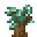
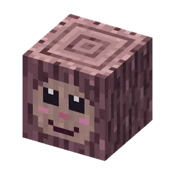

Guh-boomhutten hoog in de reuzenguhbomen van het Vadswoud, met de Boswachterguh en de Knabbelplukker
BoomhutdorpVadswoudVadswoud
Treehouses shaped like guh heads, rope bridges, the Boswachterguh and the Knabbelplukker.Boomhutten in de vorm van guhhoofden, touwbruggen, de Boswachterguh en de Knabbelplukker.
The treehouse villageHet boomhutdorp
Only in the Vadswoud, about 1 per km (super compass: Wonen > Boomhutdorp). Five giant guh trees: the Moederboom in the middle (a big guh face in the trunk; its mouth is the door to a hollow with a nest and a chest) and four around it. A spiral staircase leads to the village square around the trunk, ladders and six rope bridges of vadstouw lead to the decks in the other trees. Six treehouses shaped like guh heads (the mouth is the door), the boswachterspost, the plukkershut by the berry garden, a lookout at the very top with the best chest, and six guh families with 12 babies.
Alleen in het Vadswoud, ongeveer 1 per km (superkompas: Wonen > Boomhutdorp). Vijf reuzenguhbomen: de Moederboom in het midden (een groot guhgezicht in de stam; de mond is de deur naar een holte met een nestje en een kist) en vier eromheen. Een wenteltrap loopt naar het dorpsplein rond de stam, ladders en zes touwbruggen van vadstouw naar de dekken in de andere bomen. Zes boomhutten in de vorm van guhhoofden (de mond is de deur), de boswachterspost, de plukkershut bij de bessentuin, een uitkijkhut in de top met de beste kist, en zes guhfamilies met 12 baby's.
LootBuit
| ItemVoorwerp | CountAantal | ChanceKans |
|---|---|---|
| 6–14 | oftenvaak | |
 Vadshoutzaailing | 1–4 | oftenvaak |
| 1–3 | oftenvaak | |
| 1–4 | oftenvaak | |
 Guhgezichtje in de schors | 1–3 | oftenvaak |
| 2–10 | oftenvaak | |
| 3–8 | oftenvaak | |
| 6–16 | oftenvaak | |
| 8–24 | oftenvaak | |
| 4–10 | sometimessoms | |
| 1 | sometimessoms | |
| Gouden appel | 1 | sometimessoms |
| 1–3 | 30% |